Simulado 1
No meio do caminho
Para medir onde você está e ajustar o estudo enquanto o edital não sai.
30 dias após a compra
Material independente, sem vínculo com o Governo de Mato Grosso, com a Polícia Militar de Mato Grosso nem com a banca.
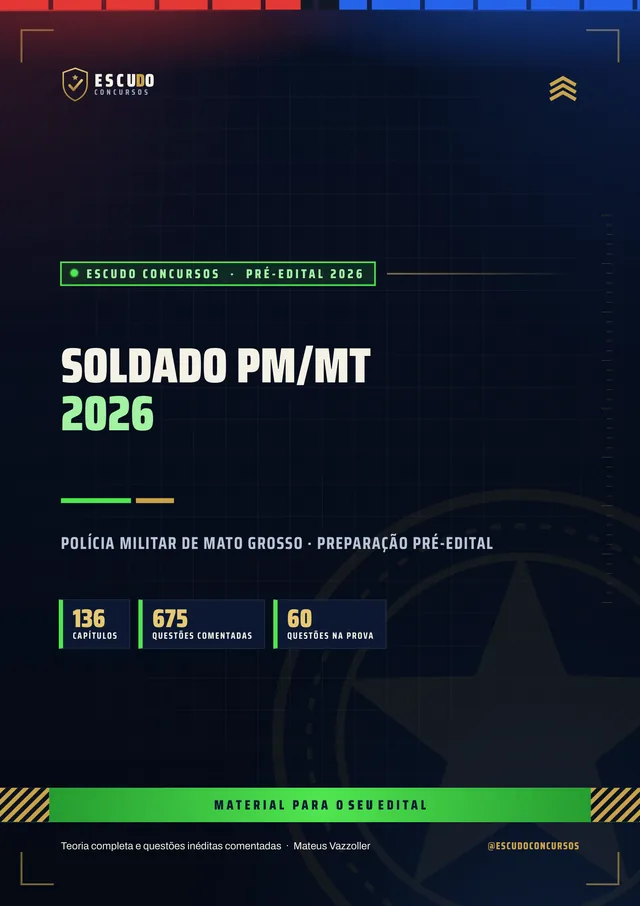
675questões
comentadas
ConcursoPM/MT2026 · Soldado
Briefing
Ainda não há edital novo de Soldado da Polícia Militar de Mato Grosso, nem banca definida. Quem estuda agora estuda pelo programa do último edital, o de 2022, sem esperar. Curso feito sobre o Edital nº 003/2022-SEPLAG/SESP/MT (UFMT), item por item, com a legislação na redação vigente em 26/11/2026 e questões de 5 alternativas com gabarito comentado.
Pré-edital: baseado no último edital (nº 003/2022, UFMT). Atualização grátis quando sair o novo
de R$ 47 por 21% OFF
R$37
Com o cupom PMMT37 até 31/12/2026. Preço de pré-edital: quando o edital sair, o curso vai subir de preço. Quem compra agora recebe de graça a atualização para o edital novo. Pelo botão, o cupom já vai preenchido.
R$47
Curso completo, com acesso imediato.
Ainda não vai comprar? Receba o aviso quando sair o edital
Edital ainda não saiu
Deixe seu e-mail e o seu WhatsApp. No dia em que o edital sair, você recebe o resumo (vagas, salário, inscrições e o que mudou no programa) e um cupom só para quem está na lista. Sem spam: só o aviso do edital.
Seus dados ficam só com a ESCUDO e servem só para este aviso. Para sair da lista, é só responder o e-mail.
Terreno
O concurso
O último concurso de Soldado foi o do Edital nº 003/2022-SEPLAG/SESP/MT, de 05/01/2022, para formação de cadastro de reserva no cargo de Aluno-a-Soldado da Polícia Militar do Estado de Mato Grosso. A primeira etapa foi organizada pela UFMT; a segunda é o Curso de Formação de Soldados, na Escola Superior de Formação e Aperfeiçoamento de Praças, em Cuiabá. Até a conferência de 26/11/2026, o edital novo e a banca não haviam sido divulgados. Nenhuma data foi anunciada, e este curso não promete nenhuma.
Por isso o curso segue o programa do Anexo III do edital de 2022. A prova objetiva durou 4h30 e teve 60 questões de múltipla escolha, com cinco alternativas (A a E), em três grupos com pesos diferentes, sem redação. A primeira etapa teve ainda exame médico-odontológico, teste de aptidão física, avaliação psicológica e investigação documental e funcional. O edital pedia curso superior em qualquer área.
Estudar agora pelo programa de 2022 economiza meses. Quando o edital novo sair, a banca, o formato e o programa podem mudar: o programa será conferido item por item e o curso, ajustado.
| Grupo | Disciplinas | Questões |
|---|---|---|
| I | Conhecimentos Básicos: Língua Portuguesa (2 pontos cada) | 15 |
| II | Conhecimentos Gerais: História de Mato Grosso, Geografia de Mato Grosso, Física, Matemática e Química (3 questões de 1 ponto cada) | 15 |
| III | Conhecimentos Específicos (2 pontos cada): Relações Interpessoais (5), Princípios de Ética e de Filosofia (2), Noções de Informática (5), Noções de Gestão Pública (6) e Legislação Básica (12) | 30 |
| Prova de 2022: 60 questões de A a E, 105 pontos, sem redação; era eliminado quem fazia menos de 50% da pontuação máxima (52,5 pontos). É só referência: o edital novo pode mudar banca, formato e programa. | 60 |
Análise
Os pesos da prova de 2022
Grupo I, Língua Portuguesa: 15 questões de 2 pontos, 30 dos 105 pontos. O curso cobre o programa em 17 capítulos.
Grupo II, conhecimentos gerais: 3 questões de 1 ponto em cada uma de História de Mato Grosso, Geografia de Mato Grosso, Física, Matemática e Química, 15 pontos ao todo.
Grupo III, conhecimentos específicos: 30 questões de 2 pontos, 60 pontos ao todo. Só a Legislação Básica teve 12 questões e valeu 24 pontos.
Nota de corte: abaixo de 50% da pontuação máxima (52,5 dos 105 pontos), o candidato era eliminado. Não havia mínimo por grupo, mas uma questão de Português ou de Legislação valia o dobro de uma de Física ou de Matemática.
Protocolo
O formato
Você estuda lendo, no seu ritmo, pela área de membros da Hotmart ou com os arquivos baixados. O curso segue o programa do Edital nº 003/2022-SEPLAG/SESP/MT (Anexo III), disciplina por disciplina, com a legislação federal e de Mato Grosso conferida no texto oficial vigente em 26/11/2026. Quando sair o edital novo, vale o que ele disser.
Reconhecimento
Páginas reais do PDF
Toque numa página para ver em tamanho maior.
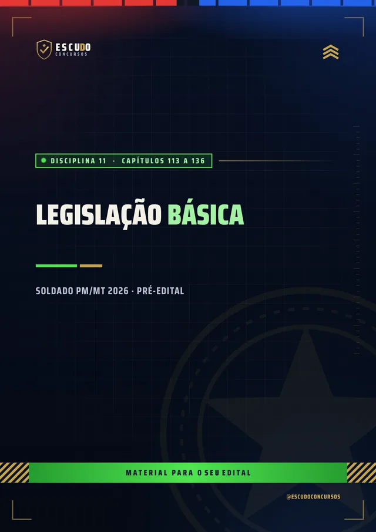
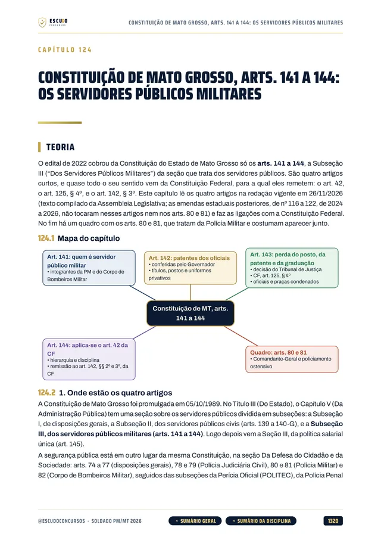
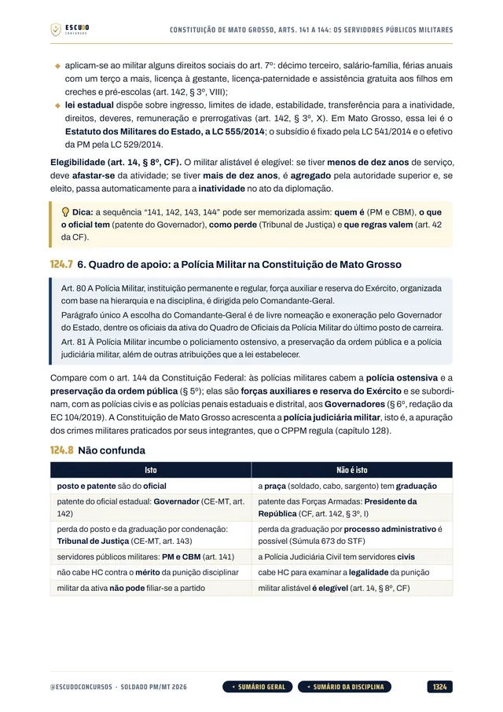
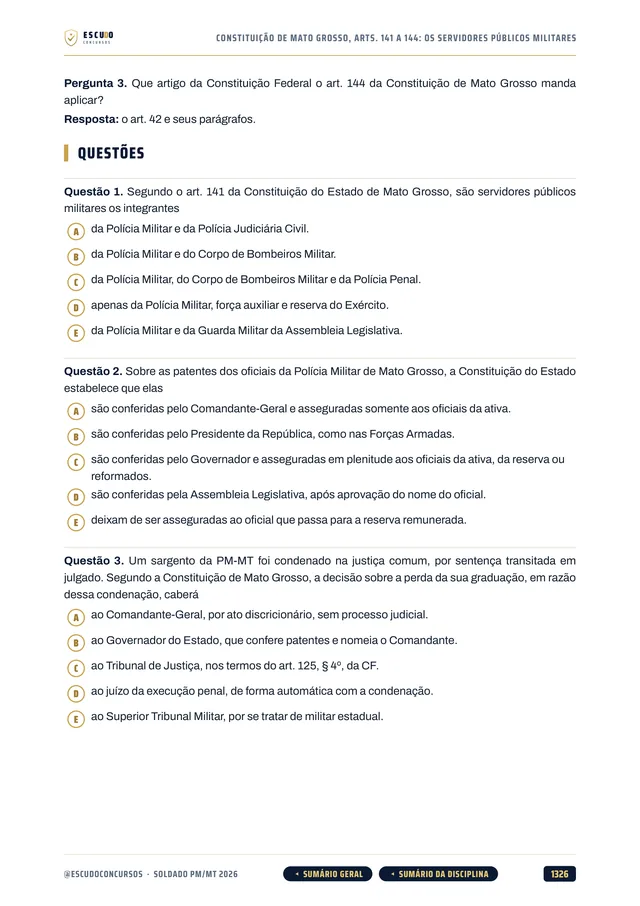
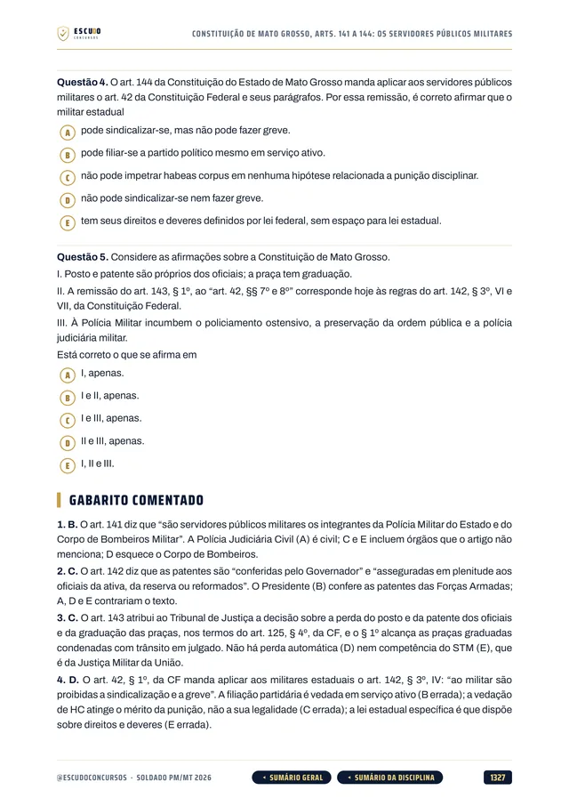
100% em PDF · Garantia de 7 dias · Pagamento pela Hotmart
Equipamento
O que você recebe
Curso em PDF organizado em 17 módulos (a abertura, 14 pelas disciplinas e 2 de simulado), com 1.518 páginas no padrão visual ESCUDO, para ler no computador, no tablet, no celular ou no app da Hotmart. Não há videoaulas.
136 capítulos cobrindo o programa de 2022: Língua Portuguesa (17), História de Mato Grosso (2), Geografia de Mato Grosso (2), Física (12), Matemática (21), Química (25), Relações Interpessoais (6), Ética e Filosofia (5), Informática (11), Gestão Pública (10) e Legislação Básica (24), mais um capítulo de abertura sobre a prova e o plano de estudo.
675 questões inéditas com 5 alternativas, de (A) a (E), todas com gabarito comentado: por que a correta está correta e onde está o erro de cada uma das outras.
Legislação Básica em 24 capítulos (12 questões e 24 pontos em 2022): Constituição Federal, Constituição de Mato Grosso (arts. 141 a 144), Código Penal Militar, Código de Processo Penal Militar, crimes contra a administração, inquérito e prisão em flagrante, improbidade, acesso à informação, abuso de autoridade e tortura.
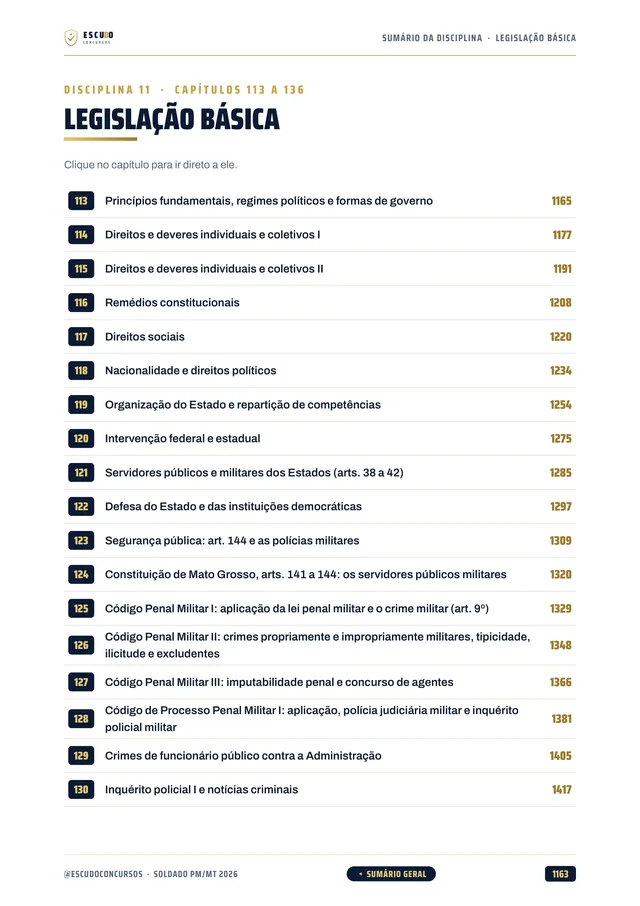
Os cinco conhecimentos gerais do Grupo II (História e Geografia de Mato Grosso, Física, Matemática e Química), em blocos curtos pelo que a prova mais cobra, e Português em 17 capítulos, que sozinho valeu 30 dos 105 pontos.
Pegadinhas e quadros "não confunda" ao longo da teoria, para você não cair nas armadilhas que a banca costuma montar.
Teoria com recursos para memorizar: mapa de cada capítulo, esquemas, revisão relâmpago e teste de memória no fim de cada capítulo.
Navegação clicável: do sumário você vai direto à disciplina e ao capítulo, e volta pelos botões do rodapé.
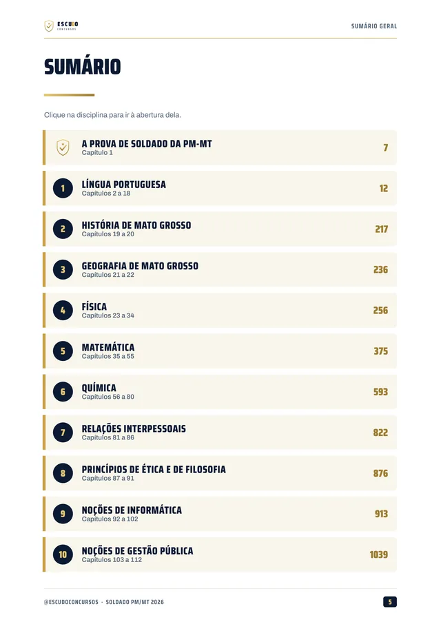
2 simulados inéditos de 60 questões de A a E, na distribuição da prova de 2022 (3 grupos, pesos 2, 1 e 2, total de 105 pontos), cada um com caderno de comentários e tabela de desempenho.
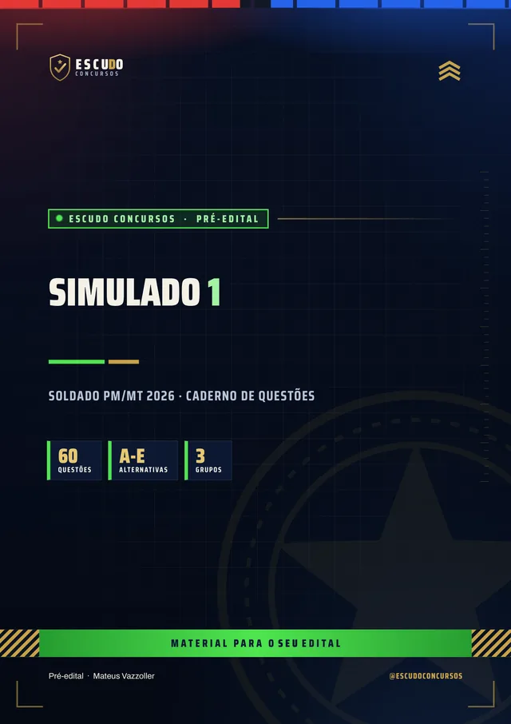
Plano de ação
Área de membros
| Módulo | Conteúdo | Liberação |
|---|---|---|
| M0 Comece aqui | Apresentação + capítulo 001 (como é a prova e como usar o curso). Bônus: PDF completo para baixar e imprimir | Na compra; o PDF completo no 8º dia |
| M1 Língua Portuguesa I | Capítulos 002 a 009 | Na compra |
| M2 Língua Portuguesa II | Capítulos 010 a 018 | Na compra |
| M3 História e Geografia de Mato Grosso | Capítulos 019 a 022 | Na compra |
| M4 Física | Capítulos 023 a 034 | Na compra |
| M5 Matemática I | Capítulos 035 a 045 | Na compra |
| M6 Matemática II | Capítulos 046 a 055 | Na compra |
| M7 Química I | Capítulos 056 a 067 | Na compra |
| M8 Química II | Capítulos 068 a 080 | Na compra |
| M9 Relações Interpessoais e Ética e Filosofia | Capítulos 081 a 091 | Na compra |
| M10 Informática | Capítulos 092 a 102 | Na compra |
| M11 Gestão Pública | Capítulos 103 a 112 | Na compra |
| M12 Legislação Básica I | Capítulos 113 a 120 | Na compra |
| M13 Legislação Básica II | Capítulos 121 a 128 | Na compra |
| M14 Legislação Básica III | Capítulos 129 a 136 | Na compra |
| M15 Simulado 1 | 60 questões e caderno de comentários | 30 dias após a compra |
| M16 Simulado 2 | 60 questões e caderno de comentários | 60 dias após a compra |
Treinamento
Treino no formato da prova
Cada simulado tem 60 questões de A a E, na distribuição da prova de 2022 (Grupo I com 15 questões de Língua Portuguesa, Grupo II com 15 e Grupo III com 30, pesos 2, 1 e 2), com caderno de comentários e tabela de desempenho. O formato será conferido quando o edital sair.
Simulado 1
Para medir onde você está e ajustar o estudo enquanto o edital não sai.
30 dias após a compra
Simulado 2
Para conferir a evolução depois de mais um mês de estudo.
60 dias após a compra
Perfil
Para quem é
Para quem vai prestar o concurso de Soldado da Polícia Militar de Mato Grosso e quer começar agora, pelo programa do último edital, com a Língua Portuguesa e a Legislação Básica, que valeram 54 dos 105 pontos em 2022, cobertas por inteiro.
Proteção
Você tem 7 dias de garantia pela Hotmart. Se não for o que você esperava, pede o reembolso pela própria Hotmart, dentro do prazo.
Cronograma
Sem surpresa na área de membros
Na compra: todas as disciplinas em PDF, uma por módulo, com a teoria e as questões comentadas. É o curso inteiro, para começar a estudar no mesmo dia.
8 dias após a compra: o PDF completo para imprimir. É o mesmo conteúdo dos módulos num arquivo só, liberado depois da garantia de 7 dias.
Simulado 1: 30 dias após a compra, para medir onde você está no meio da preparação.
Simulado 2: 60 dias após a compra, porque ainda não há data de prova marcada.
O PDF completo e os simulados aparecem bloqueados na área de membros até a data de cada um: não é conteúdo faltando, é a liberação programada.
Instrução
Dúvidas
Não. É um curso 100% em PDF: teoria, questões comentadas e simulados para ler e resolver.
O acesso é imediato depois da confirmação do pagamento, pela área de membros da Hotmart (web ou app). O PDF completo para baixar e imprimir é liberado no 8º dia.
O Simulado 1 é liberado 30 dias após a compra e o Simulado 2, 60 dias após a compra, porque o concurso ainda não tem data de prova.
Até a conferência de 26/11/2026, o edital novo e a banca não haviam sido divulgados, e nenhuma data foi anunciada. O curso não promete nenhuma. Por isso ele é de pré-edital e segue o último edital, o nº 003/2022-SEPLAG/SESP/MT, de 05/01/2022, que formou cadastro de reserva no cargo de Aluno-a-Soldado.
Porque é o último edital de Soldado da PM-MT. O programa dele (Anexo III) é a melhor referência que existe: Língua Portuguesa, História e Geografia de Mato Grosso, Física, Matemática, Química, Relações Interpessoais, Ética e Filosofia, Informática, Gestão Pública e Legislação Básica.
Ainda não foi definida. O concurso de 2022 foi organizado pela UFMT, e o curso parte dele só porque foi o último. Enquanto isso, as questões seguem um estilo neutro: cinco alternativas e cobrança fiel ao texto da lei. Quando a banca for conhecida, o curso será ajustado ao estilo dela.
Ainda não há edital novo. No último edital (2022), a prova objetiva durou 4h30 e teve 60 questões de múltipla escolha com cinco alternativas, de (A) a (E), e uma só correta, sem redação, em três grupos: Grupo I, Língua Portuguesa (15 questões de 2 pontos); Grupo II, História e Geografia de Mato Grosso, Física, Matemática e Química (15 questões de 1 ponto); Grupo III, Relações Interpessoais, Ética e Filosofia, Informática, Gestão Pública e Legislação Básica (30 questões de 2 pontos). Total de 105 pontos; era eliminado quem fazia menos de 50% da pontuação máxima. O curso segue esse formato e será conferido quando o edital sair.
O edital de 2022 pedia curso superior (bacharelado, licenciatura ou tecnólogo) em qualquer área, além de outros requisitos. O edital novo é que vai valer: confira lá antes de se inscrever.
Está na redação vigente em 26/11/2026, a data de corte do material. A Legislação Básica segue os recortes do edital de 2022: Constituição Federal, Constituição de Mato Grosso (arts. 141 a 144), Código Penal Militar (arts. 1º a 52), Código de Processo Penal Militar (arts. 1º a 28), Código Penal (arts. 312 a 326), Código de Processo Penal (arts. 1º a 28 e 301 a 307), improbidade administrativa, acesso à informação, abuso de autoridade e tortura. Com o edital novo, o curso é reconferido.
Sim, porque estão no programa do Grupo II. Em 2022, cada uma teve 3 questões de 1 ponto, então o curso as trata em capítulos objetivos, pelo que a prova mais cobra, sem deixar de lado os 15 pontos do grupo.
Não. As 675 questões de treino e as dos simulados são inéditas, escritas a partir do programa do último edital.
Você tem 7 dias de garantia pela Hotmart. Se não for o que você esperava, pede o reembolso.
Missão
Soldado PM/MT 2026
de R$ 47 por 21% OFF
R$37
Com o cupom PMMT37 até 31/12/2026. Preço de pré-edital: quando o edital sair, o curso vai subir de preço. Atualização grátis para o edital novo.
R$47
Curso completo, com acesso imediato.
Material para o SEU edital. ESCUDO Concursos.
Continue estudando
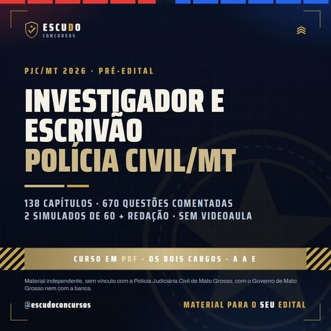
PC/MT 2026 · Pré-editalInvestigador e Escrivão da PC de Mato Grosso PM/SC 2026 · Instituto AOCPSoldado da Polícia Militar de Santa Catarina
PM/SC 2026 · Instituto AOCPSoldado da Polícia Militar de Santa Catarina CFO PM/MG 2027 · Edital aberto · CRS/PMMGCadete do CFO da Polícia Militar de Minas Gerais
CFO PM/MG 2027 · Edital aberto · CRS/PMMGCadete do CFO da Polícia Militar de Minas Gerais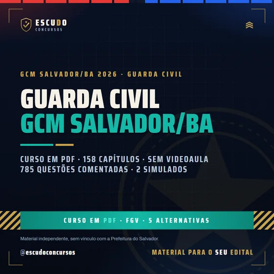
GCM Salvador/BA 2026 · FGVGuarda Civil Municipal de Salvador/BA